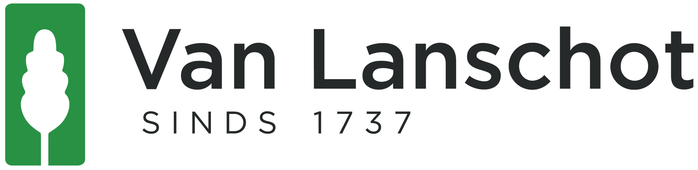

Fachkenntnisse
-
Belastingdienst - März 2018 bis heute

Verantwortlichkeiten
-
Analyse von Geschäftsfragen und Präsentation der Vor- und
Nachteile möglicher Szenarien.
-
Identifikation von Anforderungen, Prozessen und
Informationsbedarfen.
-
Arbeiten an der Innovation und Modifikation von Anwendungen und
Systemen.
-
Stilllegung bestehender Systeme und Einführung neuer robuster
Lösungen.
-
Zusammenarbeit mit Stakeholdern, funktionalen Administratoren
und Kollegen in Scrum-Teams.
-
Achmea - April 2007 bis Februar 2018
- Funktionaler Designer
- Technischer Designer
- Tester
- COBOL-Entwickler

Verantwortlichkeiten
-
Beratung in funktionalen und technischen Bereichen für die
Abteilung und Kunden.
-
Selbstständige Durchführung von Auswirkungenanalysen,
Voruntersuchungen und Angeboten gemäß Standards und Richtlinien.
-
Verantwortung für die Bereitstellung von Schätzungen,
Voruntersuchungen und Angeboten innerhalb der Richtlinien.
- Selbstständige Erstellung von Release-Plänen.
-
Verwaltung des Fortschritts von Bankenfreigaben innerhalb der
vereinbarten Zeit, Qualität und Budget.
-
Sicherstellung der Verteilung und Zuteilung von Aufgaben in
Zusammenarbeit mit dem Teamkoordinator.
-
Selbstständige Erstellung funktionaler Designs gemäß Standards
und Richtlinien.
-
Sicherstellung, dass die gelieferten Funktionalitäten den
Akzeptanzstandards entsprechen.
-
Identifikation von Engpässen und Vorschlag potenzieller
Lösungen.
- Bei Bedarf Eskalation an den Teamkoordinator.
- Berichterstattung an den Teamkoordinator.
-
Sicherstellung der Kontinuität der Systeme durch proaktive
Maßnahmen.
-
Analyse und Beratung zu technischen Aspekten von
Softwareanwendungen.
- Selbstständige Lösung von Produktionsproblemen.
-
Identifikation technischer Probleme und Vorschlag potenzieller
Lösungen.
- Verwaltung des Fortschritts von Produktionsproblemen.
- Bei Bedarf Eskalation an den Anwendungskoordinator.
- Berichterstattung an den Anwendungskoordinator.
-
Vertretung des Anwendungskoordinators als Verbindung zu anderen
externen Abteilungen.
-
Übersetzung von Voruntersuchungen des funktionalen Designers in
technische Designs.
- Unterstützung von Entwicklern während der Realisierung.
-
Durchführung von System- und Integrationstests von Änderungen
gemäß der T-Map-Methodik.
-
Unterstützung während der funktionalen Abnahmetests (FAT) und
der Benutzertests (GAT).
- Entwicklung in COBOL, ADS, IDMS.
-
Belastingdienst - November 2006 bis März 2007
- Funktionaler Designer
- Technischer Designer
Verantwortlichkeiten
-
Erstellung und Modifikation funktionaler und technischer Designs
im Finanzverkehrssystem (GVS) der Steuerbehörde.
-
Unterstützung von Entwicklern und Testern während der
Entwicklungs- und Testphasen.
-
Van Lanschot Bankiers - Februar 2006 bis Oktober 2006
- Funktionaler Designer
- Technischer Designer
- Tester
- COBOL-Entwickler

Verantwortlichkeiten
-
Durchführung der COBOL-Migration zu einem integrierten Bankpaket
in Siebel.
-
Erstellung und Modifikation funktionaler und technischer Designs
für Schnittstellen über MQ und XML.
- Einrichtung von Testumgebungen.
- Entwicklung in COBOL, CICS, DB2.
-
PGGM - November 2005 bis Januar 2006
- Funktionaler Designer
- Technischer Designer
- Tester
- COBOL-Entwickler

Verantwortlichkeiten
-
Implementierung des neuen Krankenversicherungsgesetzes im
Rentenzahlungssystem (PBS).
-
Erstellung und Modifikation funktionaler und technischer
Spezifikationen.
- Leitung von Benutzertests (GAT).
- Entwicklung in Microfocus COBOL, COBOL, TP, IDMSX.
-
Van Lanschot Bankiers - März 2005 bis Oktober 2005
- Testkoordinator
- Tester
- COBOL-Entwickler
Verantwortlichkeiten
- Integration des Banksystems für die akquirierte Einheit.
- Einrichtung von Testumgebungen.
-
Erstellung logischer und physischer Testfälle gemäß der
T-Map-Methodik.
- Erstellung von Testplänen.
- Koordinierung des Abnahmetests.
- Entwicklung in COBOL, CICS, DB2.
-
Logica - Juli 2004 bis Februar 2005

Verantwortlichkeiten
-
Testen der Datenkonvertierung von IDMS zu DB2 für
Nationale-Nederlanden, sowohl technisch als auch logisch.
- Einrichten von Testumgebungen.
-
Entwurf logischer und physischer Testfälle gemäß der
T-Map-Methodik.
- Entwicklung in COBOL, DB2.
-
DAF - Oktober 2002 bis Juli 2003

Verantwortlichkeiten
- Entwicklung in MAID, COBOL, IDMS.
-
PGGM - Januar 1998 bis September 2002
- Teamleiter
- Funktionaler Designer
- Technischer Designer
- Tester
- COBOL-Entwickler
Verantwortlichkeiten
-
Entwurf und Änderung funktionaler und technischer
Spezifikationen.
- Leitung der Benutzerakzeptanztests (GAT).
- Durchführung von Systemtests.
- Planung der technischen Entwurfsphase und der Bauphase.
- Erstellung von Budgetvorgaben.
- Erstellung von Testentwürfen gemäß der T-Map-Methodik.
- Entwicklung in Microfocus COBOL, COBOL, TP, IDMSX.
-
Königliche Luftwaffe der Niederlande - März 1995 bis Mai 1996

Verantwortlichkeiten
- Entwicklung in COBOL, ADS, IDMS.
-
Tennet - März 1995 bis Mai 1996
- Beauftragter für Umweltpolitik

Verantwortlichkeiten
-
Umsetzung des Umweltpolitischen Plans im Kontext des
Elektrizitätsgesetzes.
-
Automatisierung der Umweltdaten für den obligatorischen
jährlichen Umweltbericht.
-
IMAG-DLO - Oktober 1993 bis Februar 1995
Verantwortlichkeiten
-
Leitung verschiedener Projekte im Zusammenhang mit
Ammoniakproblemen.
-
Entwurf neuer Projektvorschläge für die Europäische Union.
- Verfassen von Publikationen.